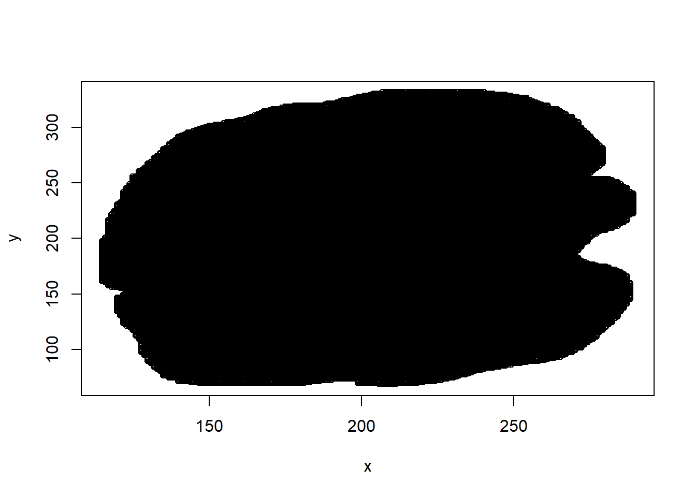
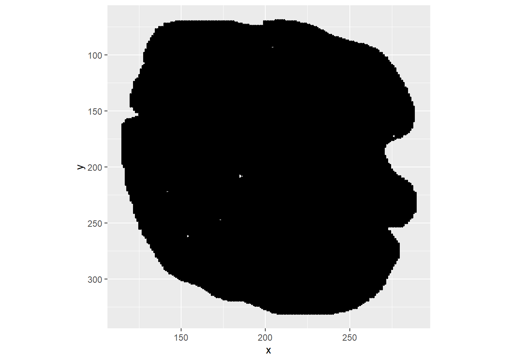
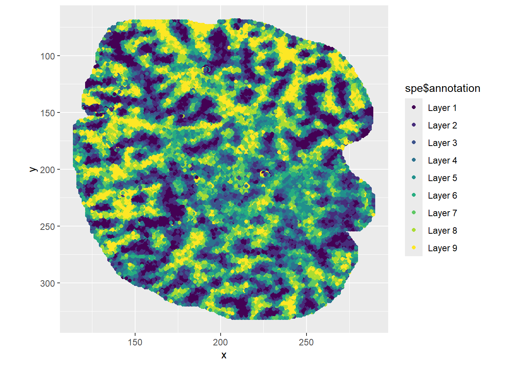
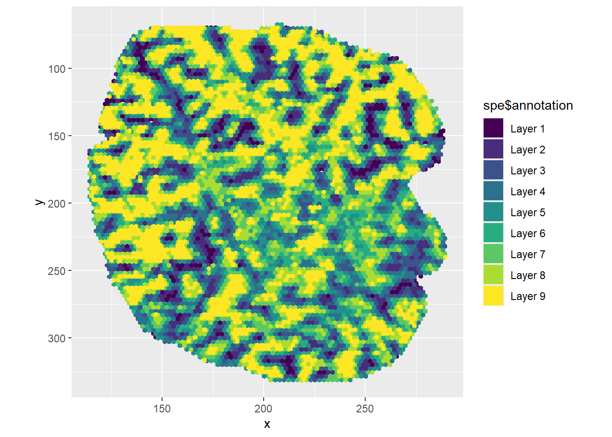
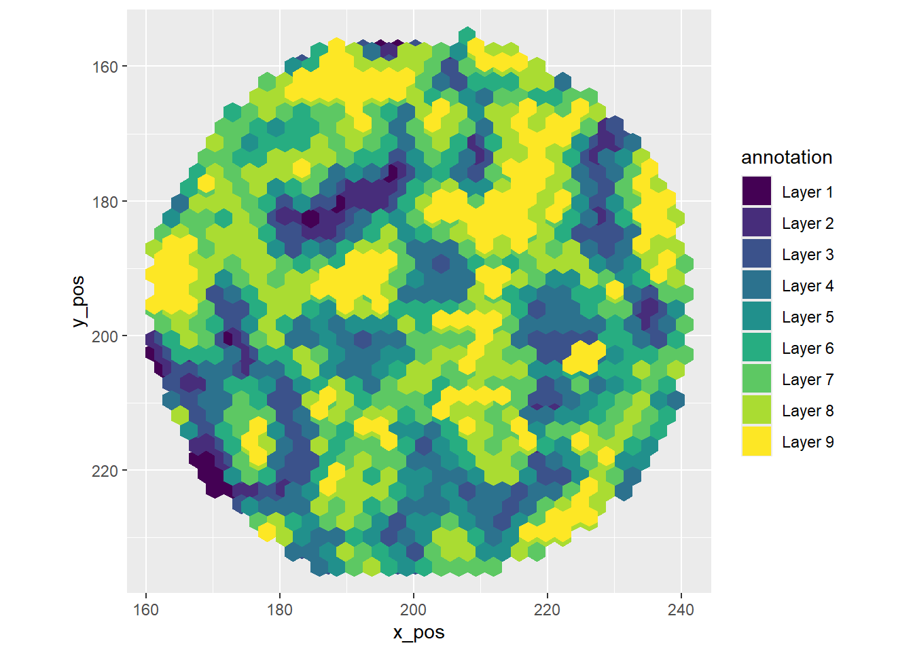
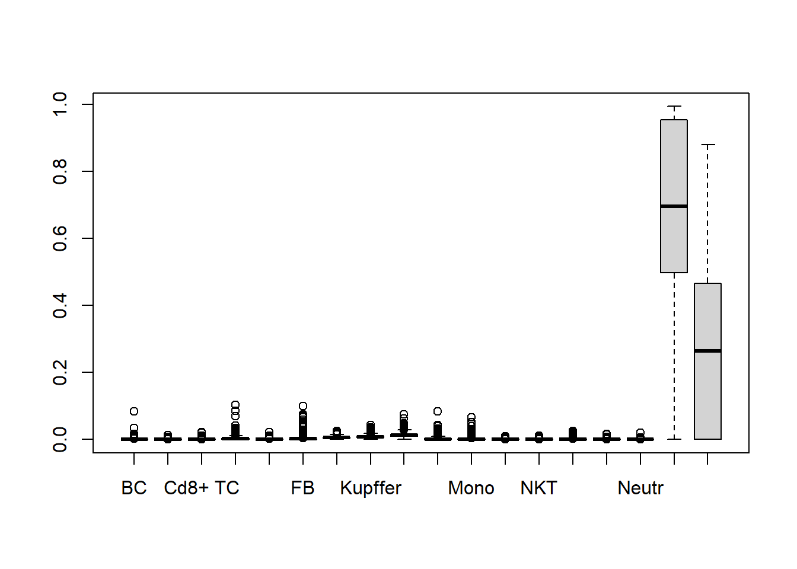
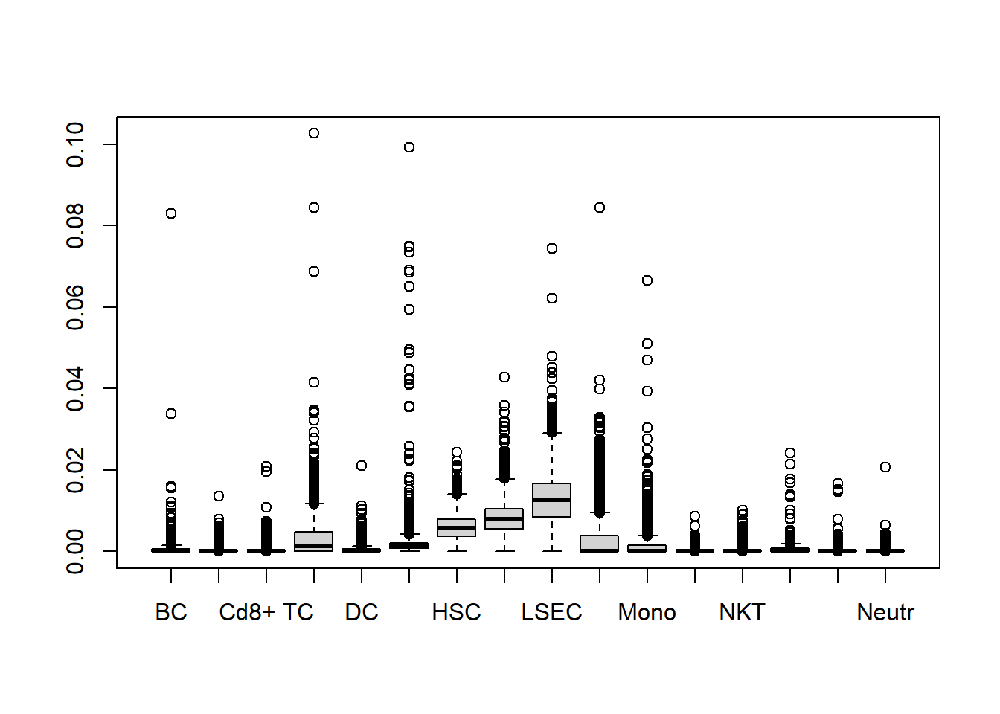
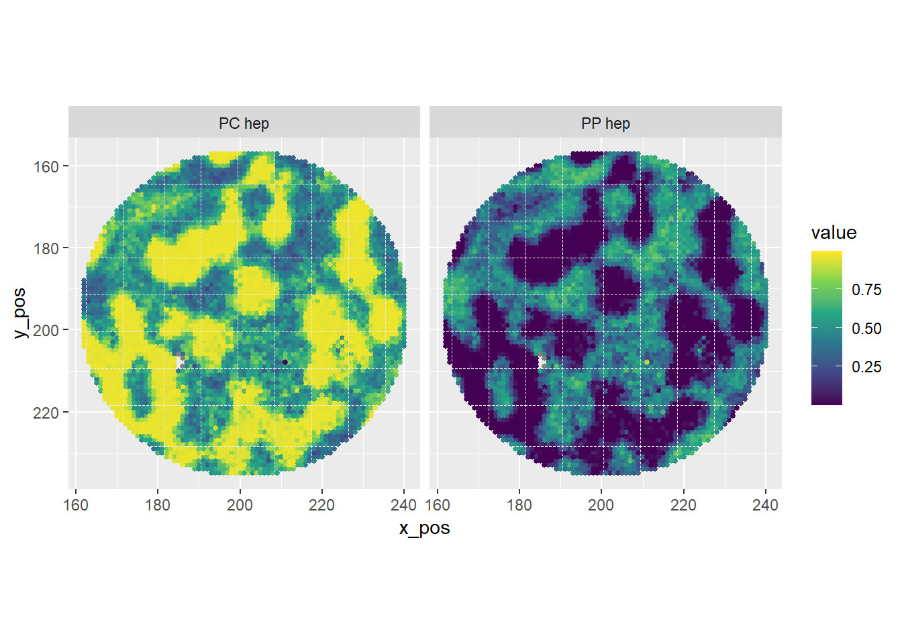
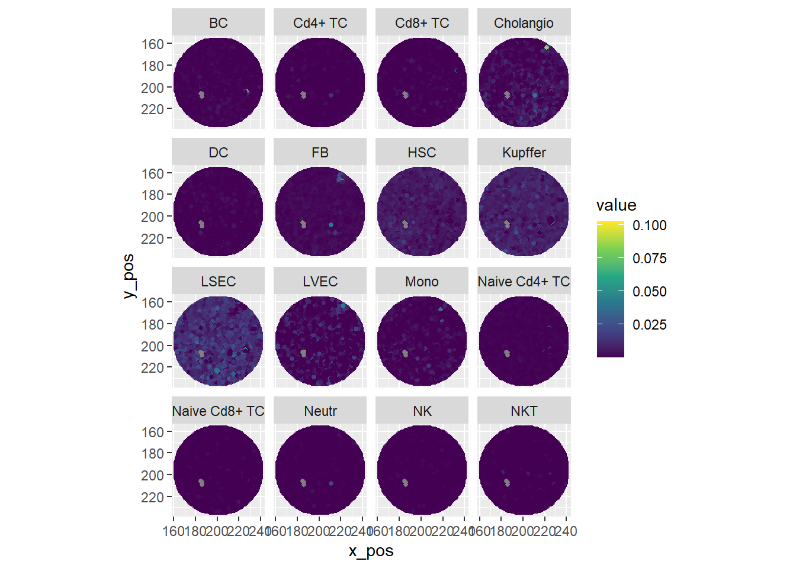

Last updated: 2024-11-20
Checks: 6 1
Knit directory: asi_spatial_workshop_2024/
This reproducible R Markdown analysis was created with workflowr (version 1.7.1). The Checks tab describes the reproducibility checks that were applied when the results were created. The Past versions tab lists the development history.
The R Markdown file has unstaged changes. To know which version of
the R Markdown file created these results, you’ll want to first commit
it to the Git repo. If you’re still working on the analysis, you can
ignore this warning. When you’re finished, you can run
wflow_publish to commit the R Markdown file and build the
HTML.
Great job! The global environment was empty. Objects defined in the global environment can affect the analysis in your R Markdown file in unknown ways. For reproduciblity it’s best to always run the code in an empty environment.
The command set.seed(20240925) was run prior to running
the code in the R Markdown file. Setting a seed ensures that any results
that rely on randomness, e.g. subsampling or permutations, are
reproducible.
Great job! Recording the operating system, R version, and package versions is critical for reproducibility.
Nice! There were no cached chunks for this analysis, so you can be confident that you successfully produced the results during this run.
Great job! Using relative paths to the files within your workflowr project makes it easier to run your code on other machines.
Great! You are using Git for version control. Tracking code development and connecting the code version to the results is critical for reproducibility.
The results in this page were generated with repository version d159369. See the Past versions tab to see a history of the changes made to the R Markdown and HTML files.
Note that you need to be careful to ensure that all relevant files for
the analysis have been committed to Git prior to generating the results
(you can use wflow_publish or
wflow_git_commit). workflowr only checks the R Markdown
file, but you know if there are other scripts or data files that it
depends on. Below is the status of the Git repository when the results
were generated:
Ignored files:
Ignored: .Rhistory
Ignored: .Rproj.user/
Ignored: xenium/
Untracked files:
Untracked: stomics/
Untracked: visium/
Unstaged changes:
Modified: analysis/index.Rmd
Modified: analysis/stomics_01_intro.Rmd
Modified: analysis/stomics_02_basics.Rmd
Modified: analysis/stomics_03_analysis.Rmd
Note that any generated files, e.g. HTML, png, CSS, etc., are not included in this status report because it is ok for generated content to have uncommitted changes.
These are the previous versions of the repository in which changes were
made to the R Markdown (analysis/stomics_03_analysis.Rmd)
and HTML (docs/stomics_03_analysis.html) files. If you’ve
configured a remote Git repository (see ?wflow_git_remote),
click on the hyperlinks in the table below to view the files as they
were in that past version.
| File | Version | Author | Date | Message |
|---|---|---|---|---|
| Rmd | 69bd8e9 | John Salamon | 2024-11-19 | show some of the immune cell annotations |
| Rmd | 818a4e9 | John Salamon | 2024-11-18 | changes to make html more readable |
| Rmd | e9213d9 | John Salamon | 2024-11-18 | Merge stomics commits |
| Rmd | 0a0195c | John Salamon | 2024-11-18 | more details |
| Rmd | ac0b4d3 | John Salamon | 2024-11-18 | add more comments |
| Rmd | 534489d | John Salamon | 2024-11-18 | add in some content for RCTD |
| Rmd | ff451dc | John Salamon | 2024-11-17 | updates |
| Rmd | 997618e | John Salamon | 2024-11-16 | making some adjustments |
# For RCTD
library(spacexr)
# spatial experiment
suppressMessages(library(SpatialExperiment))
library(SpatialExperiment)
# Easier plotting with spe
library(ggspavis)Loading required package: ggplot2Registered S3 method overwritten by 'ggside':
method from
+.gg ggplot2# Custom functions
source("code/stomicsFunctions.R")
Attaching package: 'Matrix'The following object is masked from 'package:S4Vectors':
expandDY1_D0 represents \(48.143 mm^2\)
From the paper: each bin contains \(50x50\) nanoballs.
Center-to-center distance of \(715 nm\) between nanoballs, aka bin-resolution of \(36x36 um\).
Liver cells are larger, so this is probably capturing close to a single-cell diameter.
This experiment has matched and annotated single cell data. We’ll be using this to generate Figure 1A from the paper using robust cell-type decomposition (RCTD).
As they are stored as AnnData, we can import the files from this experiment in the same way we would files directly output from SAW.
# SPE
h5ad_file <- "stomics/raw/DY1_D0_stereo-seq.h5ad"
# Read in the matrix data (CSR format)
matrix_data <- h5adMatrixLoad(h5ad_file)Matrix is in CSR format, performing conversionspatial_coords <- h5read(h5ad_file, "/obsm/spatial")
rowdata <- anndataDataframe(h5ad_file, "var")
coldata <- anndataDataframe(h5ad_file, "obs")
spatial_coords <- data.matrix(data.frame(
x=spatial_coords[1,],
y=spatial_coords[2,],
row.names = rownames(coldata)
))
spe <- SpatialExperiment(
assays = list(counts = matrix_data),
colData = coldata, # spatial bins
rowData = rowdata, # features
spatialCoords = spatial_coords
)
speclass: SpatialExperiment
dim: 29075 37669
metadata(0):
assays(1): counts
rownames(29075): 0610005C13Rik 0610006L08Rik ... Gm28487 Gm28679
rowData names(0):
colnames(37669): DY1_D0_249_210 DY1_D0_147_141 ... DY1_D0_122_149
DY1_D0_199_70
colData names(2): annotation sample_id
reducedDimNames(0):
mainExpName: NULL
altExpNames(0):
spatialCoords names(2) : x y
imgData names(0):We can quickly plot this to verify it looks correct using
plot. ggplot is much more powerful but
sometimes we just want to verify the data is there and more or less
looks correct.
# R's default plot function is actually pretty smart
# but ggplot gives more functionality
plot(spatialCoords(spe)) We can flip the y axis and set the aspect ratio correctly, for a start.
# flip y axis, and add colours
ggplot(spatialCoords(spe), aes(x, y)) +
geom_point(size = 0.5) +
theme(aspect.ratio=1) +
scale_y_reverse()
A pre-set list of genes was used to define zonation layers in this tissue, we’ve already put this annotation in our SPE.
# Plot the current annotation
# These were created using AddModuleScore in Seurat with lists of genes
# https://github.com/haoshijie13/LISTA/blob/main/00.cut_zonation_layer_and_pathway_module_score.R
# ggspavis plotSpots can be useful
# plotSpots(spe, annotate = "annotation", in_tissue = NULL) +
ggplot(spatialCoords(spe), aes(x, y, color = spe$annotation)) +
geom_point() +
scale_color_viridis_d() +
theme(aspect.ratio=1) +
scale_y_reverse()
Plotting each point can actually obscure the real picture if many
points are overlapping. We could reduce the point size, or simply bin
our data further. A good option for binning spatial data is to use
hexbin:
ggplot(spatialCoords(spe), aes(x, y)) +
geom_hex(bins=80, mapping = aes(fill = spe$annotation)) +
scale_fill_viridis_d() +
theme(aspect.ratio=1) +
scale_y_reverse()
Robust cell type decomposition (RCTD) can be used to determine the likely cell types comprising each bin of our spatial dataset.
The reference data for LISTA are also stored in AnnData format, which we can store in a SingleCellExperiment object.
# examine the file
# h5ls(sc_reference)
# str(h5read(sc_reference, "var"))
sc_reference <- "stomics/raw/Homeostasis_hepatic_cell_scRNAseq.h5ad"
# Load the raw data
sc_matrix_data <- h5adMatrixLoad(sc_reference, group = "/raw/X")Matrix is in CSR format, performing conversionobs <- anndataDataframe(sc_reference, "obs")
var <-anndataDataframe(sc_reference, "var")Warning in anndataDataframe(sc_reference, "var"): No _index found in data,
using sequential row names# make sure col and rownames are set
rownames(sc_matrix_data) <- var$gene
colnames(sc_matrix_data) <- rownames(obs)
# Construct SCE
sce <- SingleCellExperiment(
assays = list(counts = sc_matrix_data),
colData = obs, # spatial bins
rowData = var # features
)
sceclass: SingleCellExperiment
dim: 34945 51275
metadata(0):
assays(1): counts
rownames(34945): Cox7a2 Syf2 ... AC168090.1 Gm26742
rowData names(2): features gene
colnames(51275): D0_H_M1_batch1_CELL516_N2_1 D0_H_M1_batch1_CELL81_N2_1
... TTTGTCATCCCATTAT-1_3 TTTGTCATCCTATTCA-1_3
colData names(7): Library annotation ... orig.ident pct_counts_mt
reducedDimNames(0):
mainExpName: NULL
altExpNames(0):We can see how many cells we have per annotation:
table(sce$annotation)
BC Cd4+ TC Cd8+ TC Cholangio DC
4695 6926 959 462 876
FB HSC Kupffer LSEC LVEC
163 4721 1363 9654 1640
Mono NK NKT Naive Cd4+ TC Naive Cd8+ TC
879 1112 1406 1225 1269
Neutr PC hep PP hep
214 6851 6860 Because this will take quite some time with our full dataset, we’ll actually just take a random subsample of cells for this example to speed things up.
# Make sure we get a usable seed...
set.seed(123)
# Take a random subsample
sce <- sce[ ,sample(dim(sce)[2], 8000)]Finally, we can create our reference for RCTD.
# Extract single cell annotations
cell_types <- sce$annotation
names(cell_types) <- colnames(sce)
# Create RCTD object
reference <- Reference(assays(sce)$counts, cell_types)First, we’ll also subset our spatial data for efficiency. We don’t want to just randomly subsample this however, as we’ll end up with a very strangle looking dataset. Instead, let’s select a particular subset based on our xy coordinates.
# Let's select a little circle from the middle of the tissue
midpoint <- as.integer(colMeans(spatialCoords(spe)))
# center with midpoint around origin
adjusted_coords <- sweep(spatialCoords(spe), 2, midpoint, "-")
# define some regions
spe$circle <- sqrt(rowSums((adjusted_coords)^2)) < 40 # A circle, 50 pts in diameter
spe$square <- (rowSums(abs(adjusted_coords) < 50)) == 2 # A square
# We can plot more easily if we have x and y in coldata..
spe$x_pos <- spatialCoords(spe)[,1]
spe$y_pos <- spatialCoords(spe)[,2]
# Take the circle
spe_circle <- spe[, spe$circle]
# Plot...
ggplot(colData(spe_circle), aes(x_pos, y_pos)) +
geom_hex(bins=30, mapping = aes(fill = annotation)) +
scale_fill_viridis_d() +
theme(aspect.ratio=1) +
scale_y_reverse()
Now that we have our subset, we can set up the
coords <- spatialCoords(spe_circle)
rownames(coords) <- colnames(spe_circle)
puck <- SpatialRNA(data.frame(coords), assays(spe_circle)$counts)Now, let’s try running RCTD. I’ve commented this out for now because it will take a very long time to run.
# Prepare for RCTD analysis
# The max_cores thing seems broken, it just uses total n cores regardless
RCTD <- create.RCTD(puck, reference, max_cores = 1)Begin: process_cell_type_infoprocess_cell_type_info: number of cells in reference: 8000process_cell_type_info: number of genes in reference: 34945
BC Cd4+ TC Cd8+ TC Cholangio DC
699 1127 159 77 123
FB HSC Kupffer LSEC LVEC
29 734 204 1500 219
Mono NK NKT Naive Cd4+ TC Naive Cd8+ TC
142 192 219 185 191
Neutr PC hep PP hep
26 1070 1104 End: process_cell_type_infocreate.RCTD: getting regression differentially expressed genes: get_de_genes: BC found DE genes: 174get_de_genes: Cd4+ TC found DE genes: 139get_de_genes: Cd8+ TC found DE genes: 106get_de_genes: Cholangio found DE genes: 215get_de_genes: DC found DE genes: 248get_de_genes: FB found DE genes: 315get_de_genes: HSC found DE genes: 345get_de_genes: Kupffer found DE genes: 336get_de_genes: LSEC found DE genes: 328get_de_genes: LVEC found DE genes: 334get_de_genes: Mono found DE genes: 145get_de_genes: NK found DE genes: 181get_de_genes: NKT found DE genes: 142get_de_genes: Naive Cd4+ TC found DE genes: 135get_de_genes: Naive Cd8+ TC found DE genes: 127get_de_genes: Neutr found DE genes: 521get_de_genes: PC hep found DE genes: 458get_de_genes: PP hep found DE genes: 394get_de_genes: total DE genes: 2598create.RCTD: getting platform effect normalization differentially expressed genes: get_de_genes: BC found DE genes: 439get_de_genes: Cd4+ TC found DE genes: 386get_de_genes: Cd8+ TC found DE genes: 247get_de_genes: Cholangio found DE genes: 466get_de_genes: DC found DE genes: 526get_de_genes: FB found DE genes: 659get_de_genes: HSC found DE genes: 626get_de_genes: Kupffer found DE genes: 670get_de_genes: LSEC found DE genes: 648get_de_genes: LVEC found DE genes: 638get_de_genes: Mono found DE genes: 338get_de_genes: NK found DE genes: 557get_de_genes: NKT found DE genes: 378get_de_genes: Naive Cd4+ TC found DE genes: 332get_de_genes: Naive Cd8+ TC found DE genes: 279get_de_genes: Neutr found DE genes: 877get_de_genes: PC hep found DE genes: 672get_de_genes: PP hep found DE genes: 620get_de_genes: total DE genes: 4399# Multi mode allows us to define >2 cell types per tissue
# RCTD <- run.RCTD(RCTD, doublet_mode = 'multi')
# Save the output as it can take a while to run
# saveRDS(RCTD, "stomics/data/RCTD.rds")We’ll load our RDS file in case we weren’t able to run this (or we don’t want to wait):
RCTD <- readRDS("stomics/data/RCTD.rds")Let’s inspect the results.
Each spot will have a list of identified cell types. It’ll also have a list of identified cells. But we can extract the weights assigned to every cell type in the reference and plot that.
# We can extract "all weights" to see the score assigned per type
celltype_list <- lapply(RCTD@results, \(x) x$all_weights)
celltype_df <- as.data.frame(do.call(rbind, celltype_list))
celltype_df <- normalize_weights(celltype_df)
rownames(celltype_df) <- colnames(RCTD@spatialRNA@counts)
boxplot(celltype_df)
The main cell types assigned are “PC hep” (pericentral hepatocyte) and “PP hep” (periportal hepatocyte). If we were to only take the most highly weighted result, this is all we’d see.
The liver cells are on average much larger, and perhaps expression is higher. If we want to highlight these immune cells, we’ll need to treat them differently.
# Get a closer look at the other cell type scores
boxplot(celltype_df[, !(names(celltype_df) %in% c("PC hep", "PP hep"))]) Now we can see the liver sinusoidal endothelial cells (LSECs), and a small number of immune cells. Let’s extract all of these results so we can plot them more easily.
# Define a dataframe with the correct number of rows
df <- data.frame(row.names = colnames(spe_circle))
# Set the results
df[rownames(celltype_df),colnames(celltype_df)] <- celltype_df
dim(df)[1] 5009 18We’ll reshape this into “long” format.
# Reshape into long format for plotting
df_long <- data.frame(
variable = rep(names(df), each = nrow(df)),
value = unlist(df),
x_pos = rep(colData(spe_circle)$x_pos, times = ncol(df)),
y_pos = rep(colData(spe_circle)$y_pos, times = ncol(df))
)We can see that our main two cell types correspond well to the zonation layers that have already been annotated:
# Plot the PC hep and PP hep weights
df_long[df_long$variable %in% c("PC hep", "PP hep"),] |>
ggplot(aes(x_pos, y_pos, color=value)) +
geom_point(size=1.0) +
scale_color_viridis_c() +
theme(aspect.ratio=1) +
scale_y_reverse() +
facet_wrap(~variable) Let’s exclude these two, and just see the distribution of other cell types, to identify some specific immune cell hotspots.
# Plot weights of each cell type
df_long[!df_long$variable %in% c("PC hep", "PP hep"),] |>
ggplot(aes(x_pos, y_pos, color=value)) +
geom_point(size=1.0) +
scale_color_viridis_c() +
theme(aspect.ratio=1) +
scale_y_reverse() +
facet_wrap(~variable)
In the remaining time, perhaps we could do:
sessionInfo()R version 4.4.2 (2024-10-31 ucrt)
Platform: x86_64-w64-mingw32/x64
Running under: Windows 11 x64 (build 22631)
Matrix products: default
locale:
[1] LC_COLLATE=English_Australia.utf8 LC_CTYPE=English_Australia.utf8
[3] LC_MONETARY=English_Australia.utf8 LC_NUMERIC=C
[5] LC_TIME=English_Australia.utf8
time zone: Australia/Adelaide
tzcode source: internal
attached base packages:
[1] stats4 stats graphics grDevices utils datasets methods
[8] base
other attached packages:
[1] Matrix_1.7-1 rhdf5_2.50.0
[3] ggspavis_1.12.0 ggplot2_3.5.1
[5] SpatialExperiment_1.16.0 SingleCellExperiment_1.28.1
[7] SummarizedExperiment_1.36.0 Biobase_2.66.0
[9] GenomicRanges_1.58.0 GenomeInfoDb_1.42.0
[11] IRanges_2.40.0 S4Vectors_0.44.0
[13] BiocGenerics_0.52.0 MatrixGenerics_1.18.0
[15] matrixStats_1.4.1 spacexr_2.2.1
[17] workflowr_1.7.1
loaded via a namespace (and not attached):
[1] tidyselect_1.2.1 viridisLite_0.4.2 dplyr_1.1.4
[4] farver_2.1.2 fastmap_1.2.0 promises_1.3.0
[7] digest_0.6.37 lifecycle_1.0.4 processx_3.8.4
[10] magrittr_2.0.3 compiler_4.4.2 rlang_1.1.4
[13] sass_0.4.9 tools_4.4.2 utf8_1.2.4
[16] yaml_2.3.10 knitr_1.49 S4Arrays_1.6.0
[19] labeling_0.4.3 DelayedArray_0.32.0 RColorBrewer_1.1-3
[22] abind_1.4-8 withr_3.0.2 grid_4.4.2
[25] fansi_1.0.6 git2r_0.35.0 colorspace_2.1-1
[28] Rhdf5lib_1.28.0 scales_1.3.0 iterators_1.0.14
[31] cli_3.6.3 rmarkdown_2.29 crayon_1.5.3
[34] generics_0.1.3 rstudioapi_0.17.1 httr_1.4.7
[37] rjson_0.2.23 cachem_1.1.0 stringr_1.5.1
[40] zlibbioc_1.52.0 parallel_4.4.2 XVector_0.46.0
[43] vctrs_0.6.5 jsonlite_1.8.9 callr_3.7.6
[46] ggrepel_0.9.6 magick_2.8.5 foreach_1.5.2
[49] hexbin_1.28.5 jquerylib_0.1.4 glue_1.8.0
[52] ggside_0.3.1 codetools_0.2-20 ps_1.8.1
[55] stringi_1.8.4 gtable_0.3.6 later_1.3.2
[58] UCSC.utils_1.2.0 munsell_0.5.1 tibble_3.2.1
[61] pillar_1.9.0 htmltools_0.5.8.1 rhdf5filters_1.18.0
[64] GenomeInfoDbData_1.2.13 R6_2.5.1 doParallel_1.0.17
[67] rprojroot_2.0.4 evaluate_1.0.1 lattice_0.22-6
[70] httpuv_1.6.15 bslib_0.8.0 Rcpp_1.0.13-1
[73] SparseArray_1.6.0 whisker_0.4.1 xfun_0.49
[76] fs_1.6.5 getPass_0.2-4 pkgconfig_2.0.3